Getting Started
em is built on one idea: your writing is yours, and it should stay that way. There is no import, no proprietary format, and no server. em reads plain Markdown files from folders you choose, indexes them so you can find anything, and leaves the files exactly where they are.
Add your First Library
A library is just a folder of Markdown files that em can access.
- Open em and select Choose a Folder… (or drop a folder into em's directory in iCloud Drive — anything you put there is added automatically, on every device).
- Pick any folder of Markdown files inside iCloud Drive.
- em indexes it. Files appear as they're read — a large library takes a little while on the first pass, and after that, only what changed is re-indexed.
Why iCloud Drive? em syncs your writing through your iCloud, not through any server em controls. Using iCloud lets libraries, Version History, and settings sync across devices. A folder outside iCloud Drive can't make that promise.
Read and Edit
Every document has two faces:
- Reader renders your Markdown as a clean, typeset page — your fonts, your spacing, your colors, all customizable in Settings → Reader. (By default, it looks a lot like this site.)
- Editor is a Markdown editor that styles as you type, with its own customizations in Settings → Editor. Not sure what Markdown code to use? Type
/to insert anything from a heading to a Ghost product card.
Images
Drop or paste an image into a document and em copies it into an images folder in your library and inserts the Markdown link — so the document and its images stay together both in and out of em.
Apple Journaling Suggestions (iOS)
On iPhone, em can draw on Apple's on-device Journaling Suggestions — photos, places, and moments from your day — as a starting point for a new document, so you can turn a memory into Markdown without starting from a blank page. Suggestions are generated entirely on-device by the system; em only sees the ones you choose to use.
Printing
Print any document straight from the Reader — it comes out set the same way it reads on screen, fonts and all.
Where Everything Lives
Everything em knows about your writing lives in one of three places:
- Your documents stay in your folders.
- Version History, library settings, and preferences live in em's iCloud folder.
- The search index is a cache of data that is unique to each device and does not sync anywhere. em can rebuild it from your files at any time, and deleting it doesn't touch your writing.
If you ever stop using em, your writing is exactly where it always was: a folder of Markdown files, with nothing missing and nothing to export.
Goals & Calendar
Set a goal for a single file, or a standing goal for everything you write. em shows your pace and your streak, and the Calendar shows what you worked on each day.
A Goal for One File
Open a file's Info inspector with the (i) button. The Goal section at the top holds a word goal and a deadline for that file, along with the reading-level and links goals.
Your Daily, Weekly, or Monthly Goal
In Settings → Goals, choose a Writing Goal: Off, daily, weekly, or monthly. The Calendar's goal bar follows it, showing how far along you are and whether you're ahead of or behind pace.
Below it, Building Streaks Requires Meeting Goals decides what counts toward a streak. On, a day, week, or month adds to your streak only when you reach your goal. Off, any period you write counts.
Counts Toward Goals and Streaks is a switch for each library, on the Goals page and in each library's own settings. A library that is off leaves the goal, the streak, and the tiles, and its marks on the Calendar become upside-down triangles, labeled “Excluded Library” in the key. The AI library has the same switch, on the AI page in Settings, and it starts off. With it on, what you ask counts as writing and em's answers never do.
Days are read in the time zone the file was written in, so travel no longer breaks a streak.
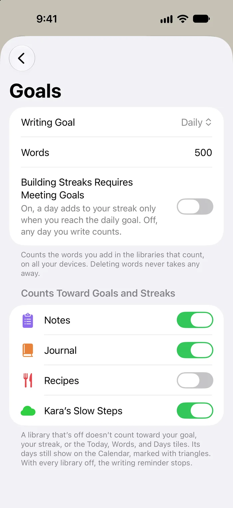
Writing Reminders
Settings → Notifications can nudge you, but only on days you haven't written yet. The reminder names your streak or what's left of your goal, in wording that changes from day to day, at a set time or a random one. See Notifications for the rest of that page.
The Calendar
Calendar is a row in the sidebar's Collections section. It shows whenever at least one library is connected, so there's nothing to set up. Open it to see the month, today's goal bar, four tiles — Today, Streak, Words, and Days — and the files from the day you choose. The Calendar is what you worked on each day.
- Filled dots in a library's color mean you wrote or edited there that day. Only filled days count toward the streak and the Days tile.
- Outlined dots mean a file was created, published, or scheduled that day with no writing in that library. A key under the calendar says “Created, Published, or Scheduled” and “Wrote or Edited.” A post written Saturday and published Wednesday fills Saturday and outlines Wednesday.
- Choosing a day lists that day's own files, never the same date in other years. On the Mac they appear in the file column. For other years, see On This Day.
- Streak at Risk: when a streak needs words today, the Calendar says so.
- Each tile is a menu. Count the Streak in days, weeks, or months, and Words and Days over this week, the month shown, or its year.
- Click or tap the count on the goal bar to open the goal editor.
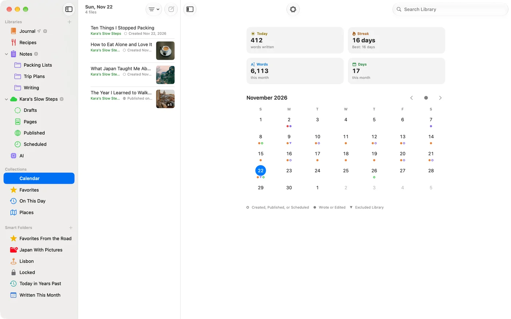
On This Day & Notifications
On This Day looks back. Every file has one anniversary, and on that day each year em can bring it back to you, by a collection, a notification, or a widget.
The On This Day Collection
On This Day is a row under Collections. It lists what you published or started on today's month and day in every year, this year included, with one section for each year, headed by how long ago it was: “3 Years Ago · 2023.”
- One anniversary per file: its publication date if it's published, otherwise the date it was created. Writing days don't place a file there.
- Choose its libraries: its toolbar menu and each library's settings pick which libraries it shows.
- It also comes as a Shortcuts action, Find Files from On This Day.
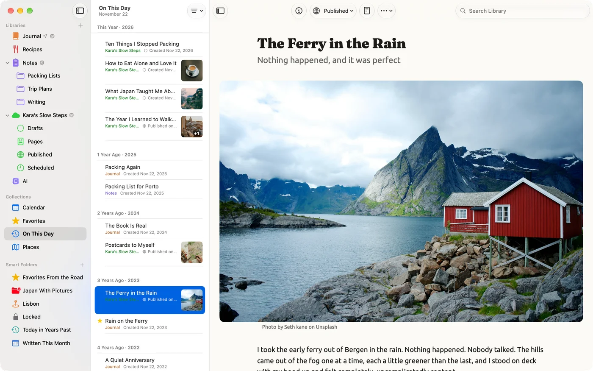
Calendar or On This Day?
They answer different questions. The Calendar is what you worked on each day: choose a day and it lists that day's own files. On This Day is what you published or started on this day, in every year.
Notifications
Settings → Notifications holds On This Day notifications and writing reminders together on one page.
- One a day, on days that hold files, at a set time or a random time inside a window you choose.
- It names a single file and its year, or counts several, in a wording that changes from day to day. Tapping it opens On This Day.
- Silence a library: Settings → Notifications has a switch for each library that silences its notifications while leaving its files on the On This Day page and in the widget. Each library's own settings hold the same switch, beside Show in On This Day.
- Opening em clears the notifications it has already delivered.
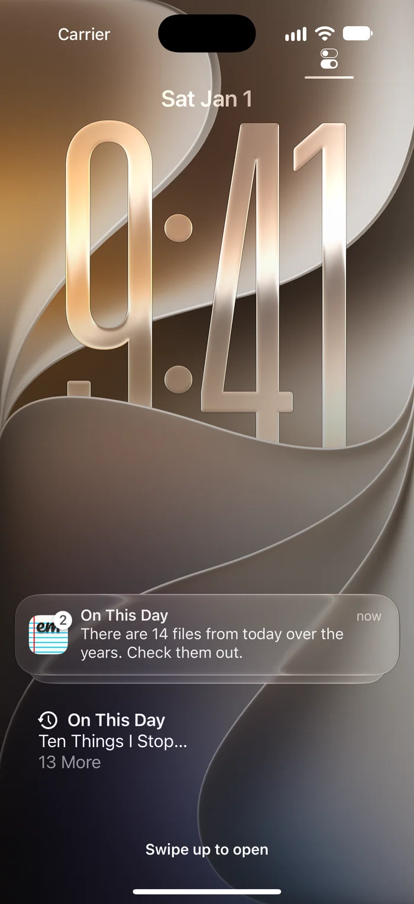
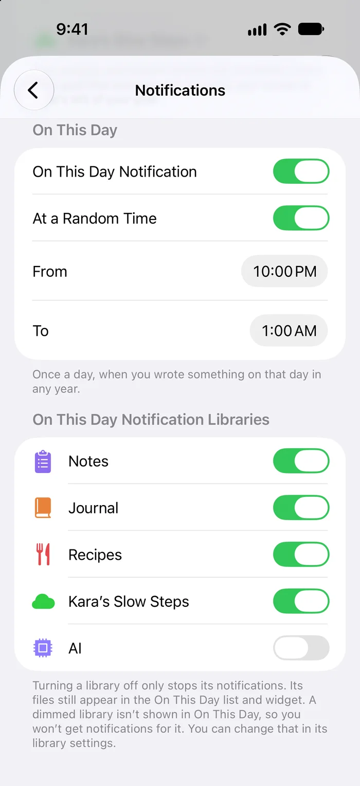
Widgets, Controls, and Quick Actions
- On This Day widget: small, medium, and large on the Home Screen or desktop, with each file's picture, and a Lock Screen version on iPhone. When the day holds more files than fit, the bottom right corner says how many more.
- New File and Streak widgets, and a New File control for Control Center.
- Home Screen quick actions for a new file in the library you last used, or for On This Day.
A locked file's title never appears in a widget or a notification. They say “Locked File” or count it instead. See Locked Files.

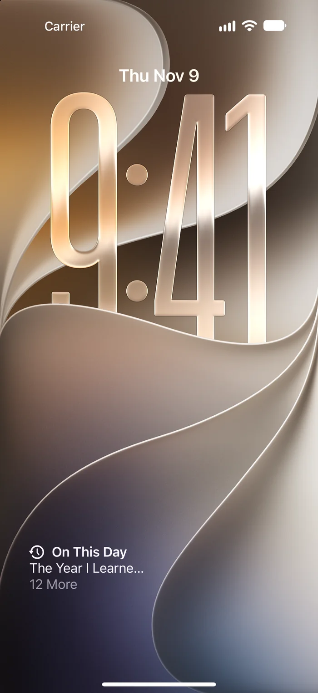
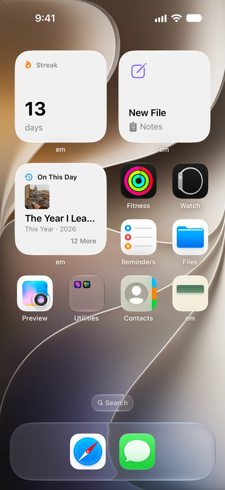
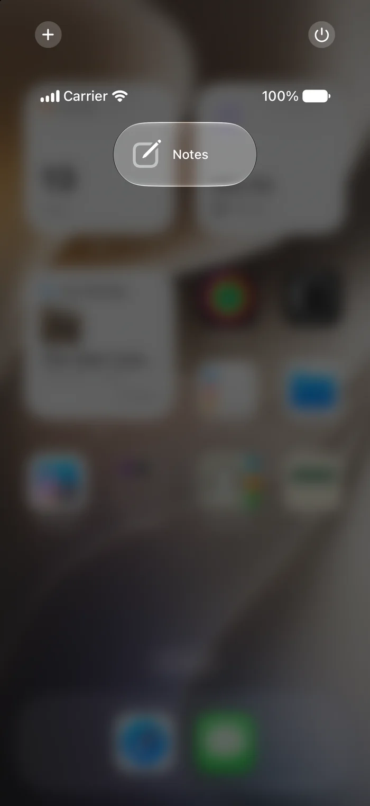
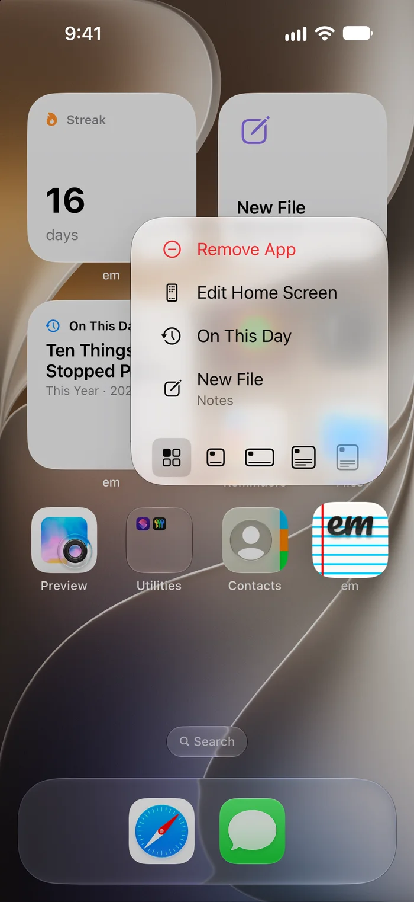
Places
Places remembers where you began writing each file, and any other place you came back to work on it, then shows them all on a map. It's off until you turn it on for a library, and once it's on, em records the weather where you began writing each file too.
Turn On Location for a Library
Open a library's settings (Library Settings…) and switch on Location. Its footer explains the deal: em adds location metadata when files are created in this library, to build maps, and location data is removed when sharing files with AI models.
- Settings → Location holds system location access (Allow Location Access…) and your list of Named Places.
- Only files created after the switch is on get a location. To add one to an older file, use that file's Location menu.
- Each library also has a Weather switch under Location, on by default. See Weather.
The Places Map
Places is a row in the Collections section of the sidebar, beside Calendar. It appears only once at least one library has Location turned on. Until then it isn't there, and when it's empty it says: “Turn on Location in a library's settings, and the files you create there appear here.”
A file's Info inspector has its own Location section: a map with one pin for each place and a count of the visits at each.
Tap the place at the end of a file to see it on that library's map, and go back to the file when you're done.
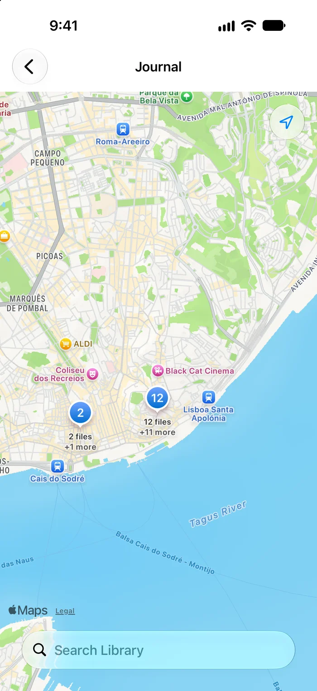
Visits
A file has the location where you began it, and it can also carry visits: other places you came back to it. A visit close to an earlier one adds to that visit instead of creating a new pin.
- Add a visit: choose Location → Add Visit Here from the file's More menu, or use the button on the keyboard bar. em confirms with “Visit Added”, or tells you “This visit is already recorded.”
- Other actions: Use Current Location, Change Location… (pick on a map), and Remove Location, which takes out the location, visits, and place names after you confirm.
- Several files at once: select them and use the Location submenu, which also offers Name as a Named Place….
Weather
Every new file with a location records the weather where you started writing: a condition such as Partly Cloudy, a symbol, and the temperature in your unit, for that hour. em writes it into the file's own frontmatter, on one line beside the location, and shows it in Info and at the end of a read page.
- Turn it on or off: Weather is on by default when you turn Location on for a library. To change it, open the library's settings (or Settings → Location), find Weather under Location, and switch it. Location keeps working without it.
- Older files: open a file's Info and choose Generate Weather to look up the weather for the hour and place it was started, back to 1940.
- Every older file at once: in Settings → Location, Generate Missing Weather adds the weather to every file that has a location but no weather, based on where and when each file was created. It skips Read Only libraries and libraries with Weather turned off, and never changes weather you wrote yourself.
- Imported journals: if a journal came with its own weather, em never reads, changes, or duplicates weather it didn't write.
- Sharing: like location, the weather line is removed from Copy, AI, Shortcuts, and Siri, and Share follows the same rule as location. Printed pages and PDFs never include it.
The data comes from Open-Meteo's public files, read directly from your device. See Weather in the Privacy Policy for exactly what that does and doesn't reveal.
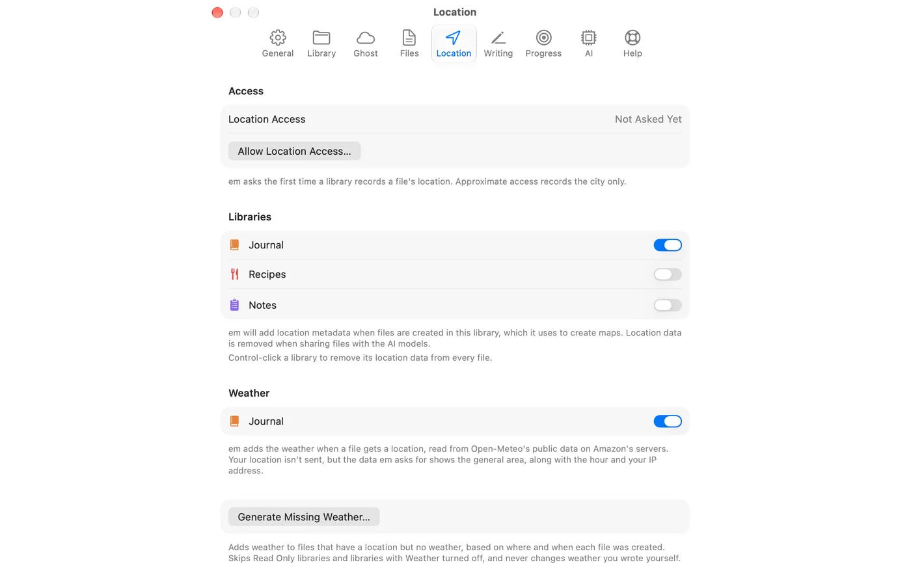
Location and Privacy
A file's location is recorded in the file's own metadata, so it moves with the file through your iCloud and never reaches em's developer. em reads your location only while the app is open. Copy, Ask em, Siri, and Shortcuts never include it, and Share and Print ask you first. The weather line follows the same rules.
Map tiles and place names come from Apple Maps. See Maps and Your Files in the Privacy Policy.
Search & Smart Folders
Files scattered across folders with all kinds of titles? Smart Search lists every file holding your words, the ones holding all of them first, with nothing cut off. Use quotes, +, -, OR, and * when you know exactly what you want, narrow by library, tag, status, or year, and save any search as a Smart Folder that stays current. When you only remember what a piece was about, ask em.
Search Operators
Smart Search matches titles and full text as you type. Files holding every word you typed come first, followed by files holding only some of them. Nothing is cut off. When you know exactly what you want, narrow it down:
- “quotes” match an exact phrase.
- +word requires a word.
- -word leaves out files containing a word.
- OR matches either word on each side of it.
- word* matches anything starting with those letters.
Filter results by library, tag, status, or year, and save any search as a Smart Folder.
Smart Search runs entirely on your device and doesn't require enabling em's AI features. Looking for a piece by what it was about rather than the words in it? That's what Ask em is for.
Ghost posts are also searchable. Published posts are included by default; drafts and scheduled posts are included if you turn that on in Settings.
Smart Folders
A Smart Folder is a saved set of rules that stays current as your library changes:
- Match any or all of your rules.
- Rules can include title, content, library, favorite status, Ghost post status (draft, published, scheduled), or date the file was last edited.
- Newer rules match files written today, files from any month and day in any year, and locked files.
Put every device on 1.5 before you edit a Smart Folder that uses a new rule, because 1.4 can't keep those rules.
Smart Folders live in the sidebar, sync to every device, and can be renamed and customized like any library.
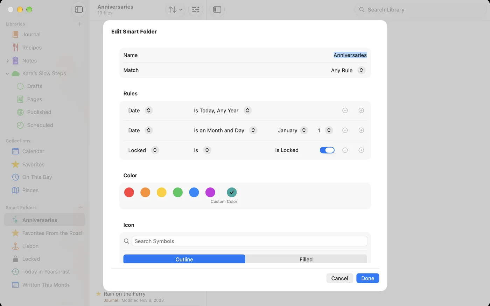
Favorites, Filtering, and Sorting
Favorite a document and it joins the Favorites list in the sidebar — the status syncs to your other devices through em's own iCloud folder.
Every file list can be narrowed and ordered:
- Sort by title, date created, date modified, or — for Ghost libraries — date published.
- File rows can show text excerpts, dates, and file extensions — all of it is up to you in Settings.
- Show Images is an optional setting that shows each file's picture beside it in every list, with a count of how many more it holds.
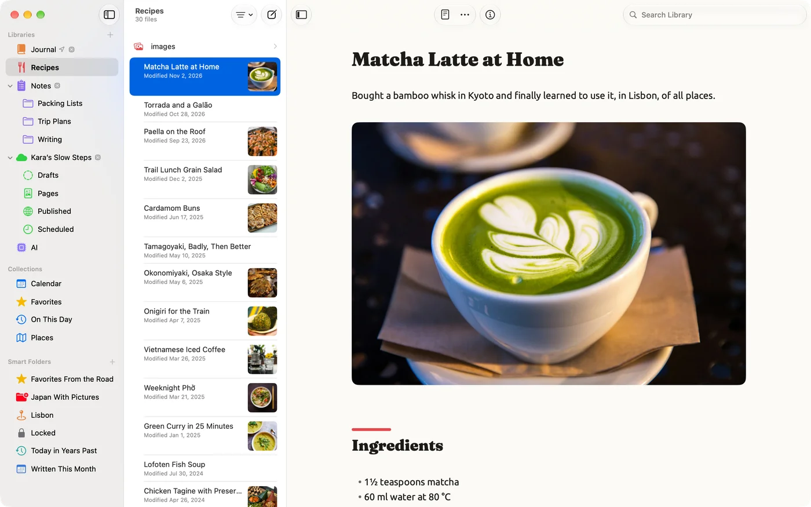
When Search Seems Off
If results ever look stale or incomplete, em's Data settings has the tools to investigate (or repair):
- Check Index Health tells you what's wrong.
- Repair Search Index fixes the common cases.
- Rebuild Search Index starts everything over.
The index is only a cache of your files — rebuilding it never touches your writing, and you never lose anything. Indices are unique to each device and do not sync.
Version History
Every edit in em is versioned automatically. Not “the last save” — a running history of your document, kept in iCloud, and synced with your library.
How Versions Work
You don't do anything. em versions a document the first time you edit it, and again at natural intervals. Rewrite the ending before lunch and change your mind after dinner — the Version from before lunch is ready to restore.
Browsing and Restoring
Choose Version History… from a document's context menu or the Options menu (⋯):
- Every Version is listed with its date and the device it was edited on. Select one to explore the differences.
- Use This Version replaces the current document with the selected Version. It also silently creates a new Version of what it's replacing, so even restoring is completely reversible.
Where Versions Live
Version History is stored in a folder inside em's iCloud directory. That means it syncs with the other files and preferences through iCloud and reaches all of your devices.
When iCloud Syncs Collide
Edit the same file on two devices before iCloud can sync and most apps silently pick a winner. em doesn't:
- Both copies are kept on every device.
- The file view tells you the file was Also Edited on Another Device and offers a choice.
- Choosing one discards nothing — the copy you don't keep is saved into the Version History.
The same promise holds when another app changes a file that's open in em: you choose which Version continues, and the other goes into Version History.
Locked Files & Sensitive Images
Keep a file private on your own device, and keep images that might be sensitive out of sight until you say so.
Lock a File or a Library
Lock a file, or a whole library, behind Face ID, Touch ID, or your passcode. It locks again when you step away.
- A locked file's title never appears on the Lock Screen, in a notification, or in a widget. They say “Locked File” or count it instead.
- em uses your device's own Face ID, Touch ID, or passcode, and never sees biometric data.
- A Smart Folder rule can match locked files.

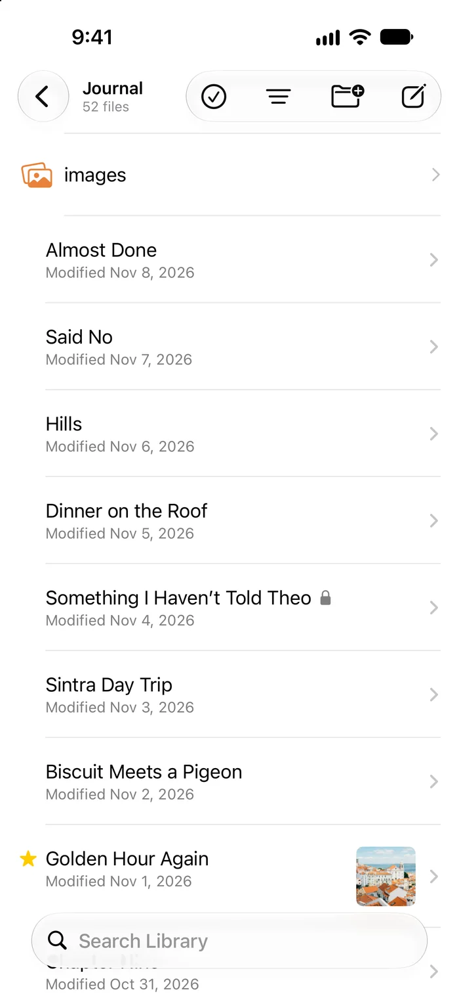
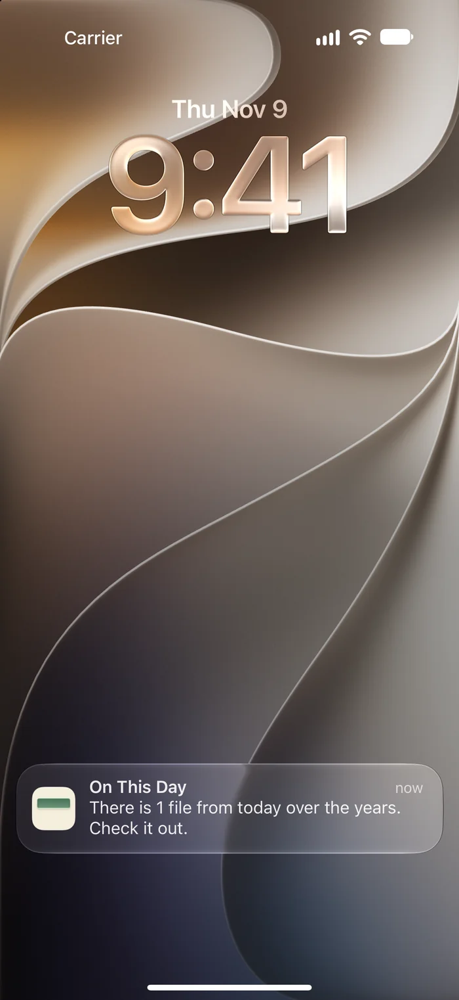
Sensitive Image Warnings
If you use Sensitive Content Warning or Communication Safety, images that may be sensitive stay blurred until you choose to show them. The detection is Apple's, runs on your device, and sends nothing anywhere. See Sensitive Images in the Privacy Policy.
Publishing to Ghost
em connects directly to your Ghost site: your posts appear as a library, your drafts publish from the same editor you write everything else in, and 19 Ghost Koenig card types are supported.
Connect Your Site
- In your Ghost admin, open Settings → Integrations → Add custom integration, name it (em happens to be a great name), and copy the Admin API key — not the Content API key.
- In em, choose Connect Ghost Site…, enter your site's URL, and paste the API key.
- em verifies the connection and indexes your posts.
On Ghost(Pro)? Enter your your-site.ghost.io address, not your custom domain — Ghost(Pro)'s Admin API only answers on the .ghost.io address, even after a custom domain is connected. Find it in Ghost admin under Settings → Domain.
Your site appears in the sidebar like any other library. The Admin API key is stored in your Keychain and syncs to your other devices through iCloud Keychain — connect once, and your site works everywhere.
Read-Only, Until You Say Otherwise
A newly connected Ghost site is read-only — you can read, search, and export every post, and nothing you do in em can change your site. When you're ready to edit and publish from em, turn off Keep Ghost read-only in Settings → Ghost.
Publish a Local Draft to Ghost
Any Markdown file in any library can become a Ghost post:
- Choose Publish to Ghost… from the file's context menu or the Options menu (
⋯). - Set the title, excerpt, post slug, featured image, and tags. If the draft has an image, em offers the first one as the featured image automatically.
- Choose the newsletter settings — send to all subscribers, free or paid only — or don't send at all.
- Create Draft to keep working on it in Ghost, Publish Post to go live, or Schedule Post for later.
A post sent to Ghost from a local file keeps that file's created date and its writing days, so your streaks, the Calendar, and On This Day stay right. Delete Local File on a file sent to Ghost also removes the images only that file used.
Edit an Existing Ghost Post
Once Ghost's read-only mode is off, open any post from your Ghost library and switch to the Editor. em converts Ghost's cards into readable Markdown (see the Markdown cheat sheet) so the whole post stays plain text while you work.
- Save to Ghost (⌘S) sends your changes back to the site. Nothing is ever sent until you save — there is no auto-publish.
- If the post changed on Ghost while you were editing, em shows you both versions and lets you choose. Your edit is never silently overwritten, and neither is the site's.
- Leave a post with unsaved changes and em asks to save them to Ghost, or revert to the site's version.
- Edit Post Settings… changes a post's status — title, excerpt, tags, newsletter, schedule — without touching its content.
Staying in Sync
em checks your site for changed posts every time it launches so your site is always in sync.
AI in em
AI features are off by default. You can leave it that way, or use AI on your terms. Ask em and search run on-device by default; Siri can search, add, or edit your documents once AI is on (requires OS 27); Editorial Review runs through a Shortcut on Apple's Private Cloud Compute, or a model you connect yourself. Every surface names the model that's answering, and you decide which files AI can see.
Search, indexing, and reading your files happen entirely on-device in every configuration without needing to enable AI features. Location data is never sent with an AI request.
Ask em
Ask a question — “what have I written about my grandfather?”, “when did I first mention burnout?” — and em answers from your own writing, grounded in the actual documents, with sources you can open. Answers arrive as conversations in the AI library, which is itself just a folder of Markdown files in your iCloud Drive — your conversations sync everywhere, and you can read them in any app.
Ask em only reads libraries you've approved in Settings → AI.
Siri
With AI turned on, Siri can search, add, or edit your documents directly — on Mac, iPad, and iPhone running OS 27 or later. Ask it to find a document, create one, read one back to you, or make a change, and it works the same way Ask em does: grounded in your own files, nothing on the open internet.
Simple requests run on-device. Anything Siri can't handle on-device falls back to Apple's Private Cloud Compute, under the same PCC guarantees Editorial Review's Shortcut uses — see Private Cloud Compute in the Privacy Policy. Siri follows the same library approvals as Ask em, in Settings → AI, and edits it makes are versioned automatically, exactly like an edit you typed yourself.
Editorial Review
Ask for an Editorial Review and em reads the open draft and returns structured feedback. What makes it different: the instructions are yours. Every review follows the “Editorial Review Prompt” document that you can edit in Settings → AI (or in the Shortcut, if you're using Apple Intelligence). Want reviews to focus on structure, or check your citations, or be harsher? Edit the prompt document. Delete your edits and em falls back to its built-in prompt.
Editorial Reviews run through one of two engines:
- A connected model, if you've added one.
- A Shortcut you build in Apple's Shortcuts app — a “Use Model” action runs on Apple's Private Cloud Compute. em hands the Shortcut your draft, and the Shortcut's own permissions govern everything else. See Shortcuts.
Either way, a review sends the draft's text to the service that reviews it — em tells you so before the first one runs.
Connecting Your Own Model
In Settings → AI, pick a provider and paste your API key (the Get a Key… button opens in your browser).
- Your key, Your Billing. em is not a middleman — usage is billed by the provider to your account, and you can revoke the key in their console at any time.
- One Connection at a Time. Connecting a provider replaces the previous one, but switched-away keys stay safely in your Keychain — switch back without re-pasting. Only the Forget API Key… button (or an em Factory Reset) deletes one.
- Keys Work Everywhere. The connection and key sync through iCloud Keychain.
- em Always Tells You Who's Answering — the input field itself says “Ask em, powered by Claude” (or ChatGPT, or Gemini, or Apple Intelligence).
- Disconnect keys anytime to return fully on-device.
Web Searches. External models can access the web to add references to your results. This is off by default. When off, requests carry no tools — the model cannot browse the internet, and em strips any external link the model invents. Turn Enable Web Searches on and the provider's own search runs using your API key, and Editorial Review cites real retrieved sources in an Extended Citations section.
Turning AI Off
Settings → AI → Enable AI turns the whole thing off — Ask em, Editorial Review, connected models, and Siri's access to your documents. Turning AI off deletes the entire AI library and its conversations on every device. This is a destructive action and conversations cannot be restored after disabling AI in em.
Shortcuts
em's actions are available in Apple's Shortcuts app on Mac, iPad, and iPhone. Use your writing as the destination — or the source — for any automation you can dream up.
The Actions
| Action | What it Does |
|---|---|
| Create Document | Creates a new Markdown document in a specified library, with a title and optional starting text, location, and place name. |
| Search Documents | Searches your libraries by title and content; returns the matches for later steps. |
| Append to Document | Adds text to the end of a document. |
| Prepend to Document | Adds text to the beginning of a document. |
| Replace Text in Document | Finds matching text in a document and replaces it with specified text. |
| Open Document | Opens a document in em. |
| Get Document Title | Returns a document's title. |
| Get Document Markdown | Returns a document's full Markdown source. |
| Get Editorial Review Prompt | Returns your Editorial Review Prompt, for use in a Shortcut that runs its own review. |
| Create AI Conversation | Saves text produced by a Shortcut as a new AI conversation in em. |
| Publish to Ghost | Writes specified content to the Ghost site in draft, scheduled, or published status. |
| Set Document Location | Sets a document's location, with an optional place name, either as where it was written or as a visit. |
| Rename Document | Gives a document a new file name. em adds .md if you leave it off. |
| Find Files from On This Day | Finds the files written on a month and day in any year, newest first, in the libraries On This Day shows. |
| Get File Name | Returns a document's file name, with or without its folder. |
Actions that write are careful by design: if a file changes while a Shortcut is running, em declines to overwrite the file rather than clobber your edit. Set Document Location also respects each library's Location switch — a library with Location off refuses it.
Seven of the actions come with spoken phrases for Siri, such as “Create a document in em”, “Search em”, “Open a document in em”, and “Publish to Ghost with em”.
Shortcut Ideas
- Capture Inbox. A Shortcut on your phone that asks for text and appends it to a file in your library — a thought captured in two taps, from anywhere.
- Daily Note. Create a document named for today's date in your journal library, from a time-of-day automation.
- Read it Later. Share a link to a Shortcut that appends it, with the page title, to a reading list document.
- Your Own AI Pipeline. Chain Get Document Markdown into any model action Shortcuts can reach, then Create AI Conversation to file the response in em — your archive in, your archive out. This is how Editorial Review using Apple's model works.
Pre-Built Shortcuts
Four built with em's actions, ready to add to your own Shortcuts library:
| Shortcut | What it Does |
|---|---|
| DreamcatcherLast updated: September 9, 2026 | Capture what you remember about a dream and save it as a new document in em. Optionally, it can use Apple's Private Cloud Compute to turn the dream into a short story, with a possible interpretation. |
| Entertainment ReviewerLast updated: September 9, 2026 | Create a Ghost post reviewing a movie or TV show, using data from The Movie Database. |
| JournalerLast updated: September 9, 2026 | Capture a thought and save it to em as a new document. |
| Editorial ReviewLast updated: September 9, 2026 | Runs an Editorial Review of your open draft using Apple's on-device model, via Private Cloud Compute — the Shortcut behind the Editorial Review feature. |
Frequently Asked Questions
Privacy
Can em access my data?
No. There is no em server at all — that's not an “em doesn't sell your data” promise, it's an architectural decision. Your writing syncs through your own iCloud account and never touches infrastructure em operates. Read more in the Privacy Policy.
Does em see my AI questions?
No. If you use an external model with an API key, those questions are sent through that provider's process. The response is captured as a Markdown file in your AI library. Nothing is ever sent to em or its developer. Read more in the Privacy Policy.
Files and iCloud
Why do libraries have to be in iCloud Drive?
iCloud is em's only sync feature. Your folders, your Version History, your library settings — all of it reaches your other devices by living in an iCloud-synced folder.
What is Version History?
em keeps a record of changes made to your writing in case you ever need to restore an accidental change. Versions are saved automatically to em's folder inside iCloud, so they're separate from your actual writing.
To preserve iCloud space, Version History cleans up after itself:
- Versions less than 24 hours old are never touched.
- Versions between one day and one week old are condensed to the most recent version per day — the rest are removed.
- Versions older than a week are reduced to one per week — the rest go.
What are the folders inside my iCloud Drive?
These are em's home for preferences, Version Histories, and library customizations. They live inside iCloud so they sync across your devices. They can be deleted by performing a Factory Reset in Settings.
What happens to my writing if I stop using em?
Nothing. Your writing stays in its original iCloud location, exactly where it's always been.
I added a folder on one device. Why doesn't my other device add it automatically?
Each device needs to explicitly request permission to your iCloud libraries. This is a way to protect your files in accordance with Apple's policies.
Ghost
Why can't I edit my Ghost posts?
Ghost sites are read-only by default. To enable editing, turn this off in Settings → Ghost.
Does em auto-publish my edits?
Never. Nothing reaches your site until you explicitly save or choose to publish. If you leave a Ghost draft with unsaved changes, em asks what to do.
Does em support Ghost formats that aren't part of Markdown?
Yes! em uses a customized version of Markdown that supports 19 different Ghost Koenig card types, like callouts, image galleries, and toggles. This custom Markdown is denoted by ::: in the editor and can be used in local drafts too. Learn more in the Markdown cheat sheet.
Can I use em to export posts from Ghost?
Yes. em can export a single post or your entire library as Markdown files, including em's customized Markdown format for Ghost-specific styles.
Search and the Index
Why does search say it's indexing?
em builds a search index from your files on your device. On a new install or right after a big import, indexing can take a few minutes, especially on large libraries, and results fill in as it goes. The index is stored on-device in accordance with em's Privacy Policy and never syncs anywhere.
Why do search results look wrong or stale?
Something may have gone wrong with your index, not your files. Visit Settings → Index → Check Index Health to see what's going on. If needed, use Rebuild Search Index. The index is only a cache; rebuilding never touches your files.
Goals, Places, and Location
Why don't I see Places in my sidebar?
Places appears only once at least one library has Location turned on. Open a library's settings and switch on Location, and the row shows up in Collections. See Turn On Location for a Library.
Does em track where I go?
No. Location is off by default. In a library where you turn it on, em records where you began writing each new file, plus any visits you add, and only reads your location while the app is open. There's no background tracking, and nothing goes to an em server, because there isn't one.
Is my location sent to AI?
No. Location data, and the weather recorded with it, is removed before anything reaches a model — on-device, Private Cloud Compute, or a provider you connect. Copy, Ask em, Siri, and Shortcuts never include it either, and Share and Print ask you first.
Where does the weather come from?
From Open-Meteo's public open-data files, which are hosted on Amazon Web Services. The current hour comes from Deutscher Wetterdienst's ICON model, and older dates come from Copernicus ERA5. em reads them directly from your device, with no account, key, or login, and nothing goes through a server run by the developer. Credit is in the Privacy Policy's acknowledgments.
Does looking up weather reveal my location?
Not your coordinates, place names, or file contents — em sends none of those. But the parts of the public files em asks for correspond to a region of the map, so Amazon's servers, and Open-Meteo if it keeps access logs, could infer your general area, the hour being looked up, and your device's IP address, as with any web request. If that's more than you want, turn Weather off for the library; Location keeps working without it.
How do I turn weather off?
Open the library's settings (or Settings → Location) and switch off Weather under Location.
Do my existing files get a location?
Only files created after you turn Location on. For older files, use the file's Location menu: Use Current Location, or Change Location… to pick a spot on the map.
What counts toward my streak?
It depends on Building Streaks Requires Meeting Goals in Settings → Goals. On, a period counts only when you reach your goal. Off, any period you write counts. Only filled days on the Calendar count, and only in libraries that have Counts Toward Goals and Streaks on. The Calendar's Streak tile can count in days, weeks, or months, and days are read in the time zone you wrote in, so travel doesn't break a streak.
Why is a day outlined instead of filled?
An outlined dot means a file was created, published, or scheduled that day, but you didn't write in that library. A filled dot means you wrote or edited there. Only filled days count toward your streak and the Days tile.
What's the difference between Calendar and On This Day?
Calendar is what you worked on each day. On This Day is what you published or started on this day, in every year. See Calendar or On This Day?
AI
Why would a writer use AI?
AI use among writers can be controversial, but em believes it's a choice you get to make for yourself. If you want AI to provide feedback, em provides the opportunity — but only after you explicitly enable it and grant access to your libraries. em puts you in control of how, or if, you use AI.
Do I have to use AI features?
Absolutely not. Your writing is yours and you should be the only one who decides what to do with it. Markdown editing, Version History, Smart Search, and Ghost publishing all work without ever enabling AI.
AI is off — why does Write With Siri still show up?
Write With Siri is a system-wide proofreading tool provided by Apple Intelligence.
Is my AI usage private?
Theoretically yes, but it depends on the AI provider's privacy policies. When AI is enabled, em defaults to Apple Intelligence's on-device models, so your questions and your data never leave your device. AI conversations, even with on-device models, sync through iCloud so they appear in each copy of em you use.
Editorial Review sends the contents of the selected draft through remote servers for analysis. With the on-device model selected, this happens through a Shortcut and Apple's Private Cloud Compute. Siri works the same way: simple requests stay on-device, and anything more complex falls back to Private Cloud Compute.
If a remote model (Claude, ChatGPT, or Gemini) is enabled, your questions and Editorial Review content are processed in accordance with that provider's usage policies. Read more in the Privacy Policy.
Who pays for using an external model?
You do. em connects using an API key you supply, and usage is billed by the provider. You can revoke the key from the provider's account or delete it from Keychain at any time. em is not a billing middleman and takes no cut.
The Danger Zone
What does Factory Reset do?
A Factory Reset reverts em to a just-downloaded state on every device signed into your iCloud, and it cannot be undone.
Settings → Data has a few erasure options. They only touch the data em creates — Version Histories, saved preferences, and the like. Deleting them never touches your own Markdown files.
Odds and Ends
What's with the em dashes?
The em dash is the single greatest punctuation mark there is and it's worth showing off — if you want, that is. em can pick every one of them out for you in the editor, and this site does the same thing everywhere you see one.
Can em read my writing aloud?
Yes. Read Aloud is in the Options menu (⋯), with your choice of voice and speed. It reads the whole article — or, on the Mac, just your selected text — and skips code, tables, and images. It's a good way to edit based on what you hear.
Does em work offline?
Yes. So long as iCloud has downloaded copies of the files in its directory, they're available offline, and changes sync the next time you connect. Smart Search, editing, Version History, and on-device AI all work offline. Ghost publishing and remote models need the internet.
Why is em always lowercase?
It looks better that way.
Will em come to Windows or Android or Linux or insert_platform_here?
em will only be available for Apple devices — it's the ecosystem I use and understanding one development process was hard enough.
Will em support more than just Ghost in the future?
Maybe? It depends on API availability and my patience (and maybe user requests). If Medium opened their API again that would be a no-brainer...
Still Stuck?
The Markdown Cheat Sheet covers every syntax em understands, including the Ghost Koenig cards.